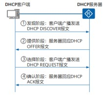

DHCP
什么是DHCP？
DHCP（Dynamic Host Configuration Protocol，动态主机配置协议），是一种用于集中对用户的IP进行管理和配置的技术。解决了手动配置IP地址繁琐的过程，就算在规模较小的网络中，也可以通过DHCP使后续增加网络设备的IP配置变得简单快捷。
如下图描述一般场景时DHCP的工作流程。主要分为四步。

1.发现阶段
首次接入网络的DHCP客户端并不清楚DHCP服务器的IP地址，为了得到DHCP服务器的IP地址，DHCP客户端以广播方式发送报文。（报文中携带了客户端的MAC地址、请求参数表项、广播标志位等信息）。
2.提供阶段
与DHCP客户端位于同一网段的DHCP服务器都会收到报文，DHCP服务器选择一个可用的IP地址，然后通过报文发送给DHCP客户端。
3.请求阶段
如果有多个DHCP服务器向DHCP客户端回应报文，客户端一般只接收第一个收到的报文。在收到报文之后，客户端以广播方式发送一个报文，包含客户端想选择的DHCP服务器标识符和客户端IP地址。一方面是为了请求这个地址，另一个方面也是告诉其他的dhcp服务器自己有地址用了，其他的DHCP服务器则会将分配给该DHCP客户端的IP地址分配给其他客户端。
4.确认阶段
当DHCP服务器收到DHCP客户端发送的报文后，DHCP服务器回应DHCP ACK报文，表示将请求的IP地址，分配给客户端使用。